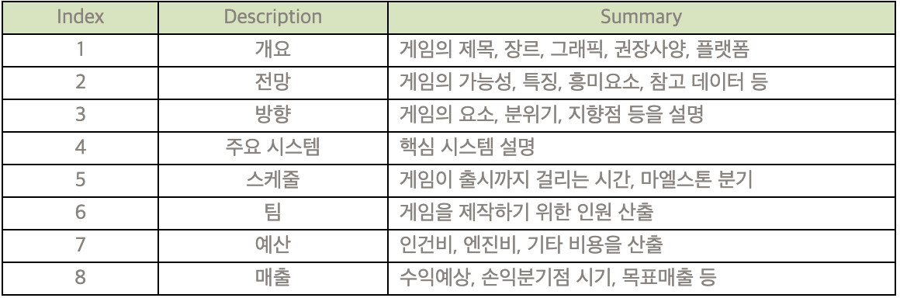

2주차
개인 프로젝트
개인 프로젝트
게임 개발프로세스 리서치

제안서
1. 개요
개요는 말 그대로, 게임을 함축해서 나타내는 것이다.
게임의 제목, 장르, 그래픽, 권장사양, 플랫폼 등을 요약해서 정리하고, 어떤 게임인지 대략적으로 알 수 있어야 한다.
기획의도도 포함되면 좋다.
2. 전망
전망은 이 게임의 가능성을 보여주는 것이다
이 게임이 어떤 방식으로 플레이 되는지 설명하고, 이 게임에 사용된 새로운 기술이나 특징을 설명한다.
이 부분에서는 마치 이미 출시된 게임을 홍보하듯 설명하는 것이 좋습니다. 흥미를 끌고, 특징을 요약할 수 있는 주제 문장을
작성하고 그 아래 세세한 설명을 붙인다. 마치 신문기사를 쓰듯이 커다란 주제문장을 달고, 그 아래 기사를 쓰듯 설명을 쓰는 것이다.
그 다음엔 이러한 방식의 게임이 왜 가능성 있고 유망한지 객관적인 데이터를 제시한다.
또한 비슷한 시기에 출시될 가능성이 있는 비슷한 게임들을 분석하고 어느 정도 경쟁력이 있는지 설명한다.
이 부분에서는 신뢰할 수 있는 설문조사 결과를 예로 들거나, 공신력 있는 매체의 기사 등을 이용하는 것이 좋다.
3. 방향
게임의 방향을 설정한다. 장르, 게임의 분위기, 게임의 요소들을 구체적으로 설명한다.
게임의 포지셔닝, SWAT 분석, 경쟁요소 등이 포함되며
이것은 게임을 만들어갈 때 팀원 모두가 머릿속에 두어야 할 일종의 테마가 될 것 이다.
4. 주요 시스템
청중이 투자자나 사장이라면 유료시스템이 되면 좋다.
그 외 게임의 근간을 이루는 핵심시스템을 설명한다.
Ex1. 카트라이더: 드리프트 시스템, 스피드전 아이템전, 카트교체.
Ex2. 아이온: 진형 시스템, 비행&활강 시스템
5. 스케줄
게임 제작에 걸리는 시간을 도표로 작성한다.
대략적인 컨텐츠 흐름대로 작성하면 보기 좋으며, 예산과 함께 적는 경우도 많다.
6. 팀
게임제작에 필요한 인원구성을 작성하며, 조직도를 많이 사용한다.
예산과 함께 적는 경우도 많다.
이미 팀이 셋팅 되어 있으면 조직도로, 팀이 덜 셋팅 되어 있으면 필요한 팀원과 연봉 등을 산출한다.
7. 예산
게임을 제작하기 위한 최소예산/ 최대예산을 측정한다.
인건비, 엔진비용, 외주비용, 사운드비용 등이 기재된다.
8. 매출
게임이 완성되는 시기부터, 수익예상 ARPU, 손익분기점 시기 등을 예상하며
목표매출을 산출한다.
게임 개발 프로세스의 이해


출처:https://blog.naver.com/onlybest01/220080008810